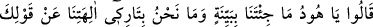
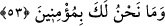

kısır oldu ve nesilleri kesildi. Ziraatla uğraşırlardı, hem de düşmanları vardı. Ziraat
için yağmura, düşmanlarını bertaraf için evlâda muhtaçtılar. Onun için Hûd (a.s.) onlara
âyette belirtildiği gibi buyurdu. Buna göre “kuvvetinize kuvvet katsın.” ifâdesinin
mânâsı, ‘sizin kuvvetinize bir kuvvet daha katsın, yâni size evlatlar versin. Böylece
onların yardımıyla düşmanlarınızı bertaraf etmeye kadir olun.’ demektir.
Rivayet edilir ki Hz. Ali’nin oğlu Hasan (r.anhümâ) Hz. Muaviye’nin yanına elçi
olarak varmıştı. Dışarı çıktığında Muâviye’nin hizmetçilerinden biri de onunla beraber
çıktı. Hz. Hasan’a dedi ki:
“–Ben çok malı olan biriyim, ama çocuğum olmuyor. Bana bir şey öğret, belki Allah
bana bir çocuk ihsan eder.” Hz. Hasan ona:
“–İstiğfara devam et.” dedi. Hizmetçi çokça istiğfar etmeye başladı. O kadar ki günde
yedi yüz kere istiğfar ettiği bile oluyordu. Sonunda adamın on çocuğu oldu.
Bu olay Muâviye’nin kulağına gidince adama: “Bunu nereden öğrenip söylediğini
sorsaydın ya!” dedi.
Başka bir ziyareti esnasında adam Hz. Hasan’a bunu nereden öğrendiğini sorunca:
“Hûd (a.s.)’ın: “Kuvvetinize kuvvet katsın” sözü ile Nuh (a.s.)’ın: “Mallarınızı ve
çocuklarınızı artırsın.” (Nuh, 71/12) şeklindeki sözlerini duymadınız mı?” diye cevap
verdi
“Günah işleyerek” yani suç işlemede ve günahlarda ısrar ederek sizi davet ve teşvik
ettiğim şeylerden “yüz çevirmeyin.”
53. “Dediler ki: “Ey Hud, sen bize açık bir mucize getirmedin. Biz senin sözünle
tanrılarımızı terk edecek değiliz. Sana inanacak da değiliz.”
Bu âyet mukadder bir soruya cevap mâhiyetinde başlangıç cümlesidir. Sanki “Peki
Hûd onlara bazı şeyleri emredip bazı şeyleri yasaklayınca kavmi ona ne dediler?” diye
sorulmuş, cevap olarak şöyle buyrulmuştur: “Dediler ki: “Ey Hûd, sen bize açık bir
mûcize” yani iddianın doğruluğunu ispat edecek bir delil “getirmedin.” Bu sözü, sırf
inadlarından ve Hûd (a.s.)’ın getirdiği mûcizelere değer vermedikleri için
söylüyorlardı. Nitekim Kureyş de sayılamayacak kadar mûcizesi olmasına rağmen
Rasûlullah (s.a.) için: “Rabb’inden ona bir mucize indirilseydi ya!” (er-Ra‘d, 13/27)
demişlerdi.
“Biz senin sözünle tanrılarımızı” yani onlara kulluk etmeyi “terk edecek değiliz.”
Senin sözünden yola çıkarak tanrılarımızı terk etmeyiz.